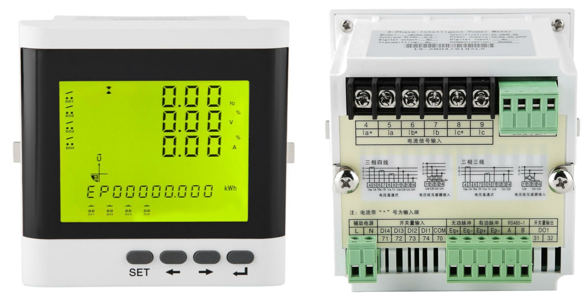
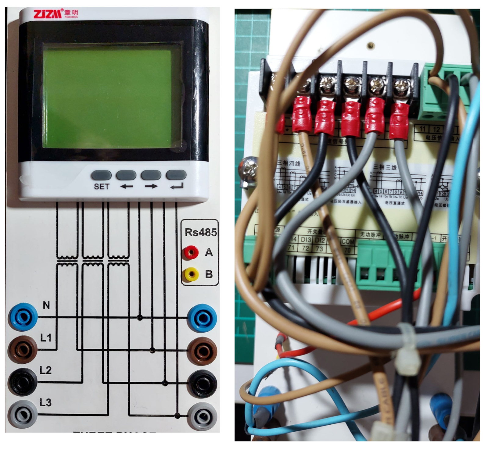
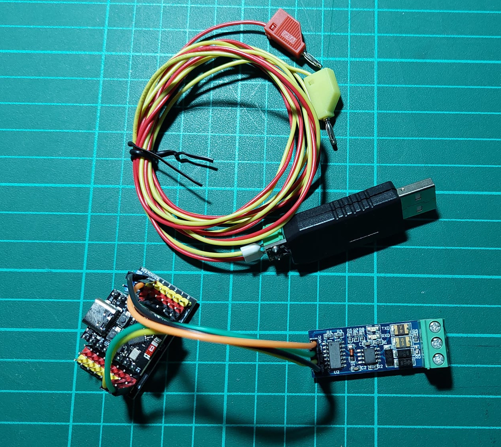
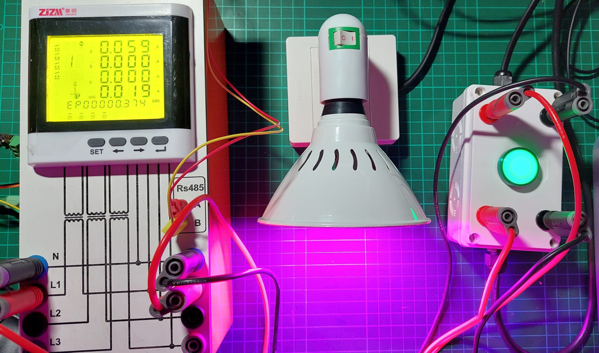
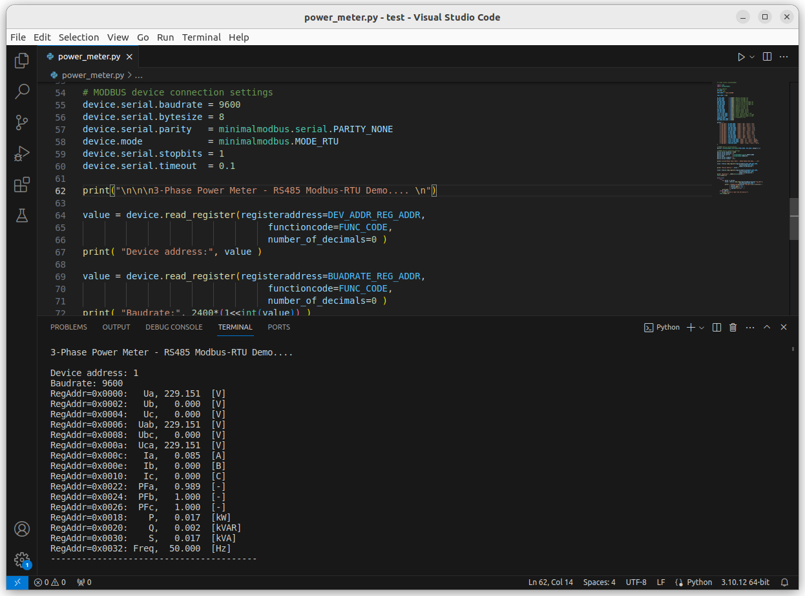
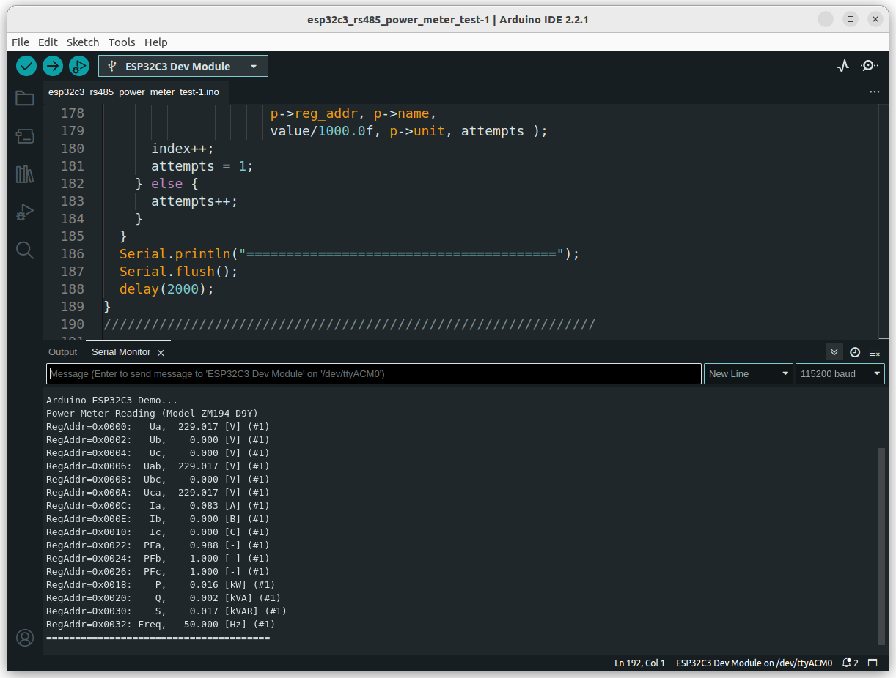

การอ่านค่าจากเพาเวอร์มิเตอร์ไฟฟ้าสามเฟส: ZM194-D9Y#
บทความนี้กล่าวถึง ตัวอย่างการเขียนโปรแกรม Arduino Sketch และใช้งานบอร์ดไมโครคอนโทรลเลอร์ Arduino ESP32 และภาษา Python เพื่ออ่านค่าจากมิเตอร์วัดกำลังไฟฟ้าแบบ 3 เฟส รุ่น ZM194-D9Y โดยใช้โพรโทคอล RS485 / Modbus RTU
Keywords: 3-Phase Power Meter, Arduino Sketch, ESP32-C3, RS485, Modbus RTU, Python
▷ เพาเวอร์มิเตอร์แบบดิจิทัล#
มิเตอร์วัดกำลังไฟฟ้า หรือ "เพาเวอร์มิเตอร์" แบบดิจิทัล (Digital Power Meter) เป็นอุปกรณ์ที่ใช้สำหรับการวัดค่าหรือพารามิเตอร์ต่าง ๆ สำหรับไฟฟ้ากระแสสลับ เช่น
- ความถี่ (Hz)
- แรงดันไฟฟ้า (V)
- กระแสไฟฟ้า (I)
- ค่าเพาเวอร์แฟคเตอร์ หรือ ค่าตัวประกอบกำลังไฟฟ้า (Power Factor)
- กำลังไฟฟ้าที่ใช้งานจริง (Real Power: kW)
- กำลังไฟฟ้าที่ปรากฏ (Apparent Power: kVA)
- กำลังไฟฟ้ารีแอคทีฟ (Reactive Power: kVAR)
- พลังงานไฟฟ้าที่ใช้ (Energy: kWh)
มิเตอร์ไฟฟ้าประเภทนี้ จำแนกได้ตามจำนวนเฟสไฟฟ้าที่ต้องการวัดทางไฟฟ้า ได้แก่ มิเตอร์แบบเฟสเดียว (Single-Phase Power Meter) และมิเตอร์แบบสามเฟส (3-Phase Power Meter) นอกจากมีหน้าจอแสดงผลแบบ LCD มิเตอร์ไฟฟ้าแบบดิจิทัลในยุคปัจจุบัน ยังรองรับการเชื่อมต่อด้วยโพรโทคอล Modbus RTU และเชื่อมต่อกับระบบบัส RS485 ได้ด้วย
การต่อวงจรไฟฟ้าเพื่อใช้งานมิเตอร์ มีหลายรูปแบบ โดยดูจากความจำเป็นที่ต้องใช้อุปกรณ์อื่นร่วมด้วยหรือไม่ เช่น การใช้หม้อแปลงแรงดันไฟฟ้า (Potential Transformer: PT) และหม้อแปลงกระแสไฟฟ้า (Current Transformer: CT) เพื่อการลดทอนแรงดันไฟฟ้าด้วย PT หรือลดกระแสไฟฟ้าด้วย CT ให้มีค่าต่ำลงและอยู่ในช่วงเหมาะสมกับมิเตอร์ไฟฟ้า
▷ มิเตอร์สามเฟส: ZM194-D9Y#
เพาเวอร์มิเตอร์ที่ได้นำมาทดลองใช้งานเพื่อการสาธิตการเขียนโปรแกรมและการเชื่อมต่อสื่อสารข้อมูล คือ โมเดล ZM194-D9Y (แบรนด์สินค้า: Zhang Ming (ZJZM))

รูป: เพาเวอร์มิเตอร์ ZiZm ZM194-D9Y (มุมมองด้านหน้า) และช่องเสียบสายไฟที่อยู่ด้านหลังของมิเตอร์ไฟฟ้า
- เป็นเพาเวอร์มิเตอร์แบบสามเฟส ผลิตในประเทศจีน
- สามารถเชื่อมต่อกับ RS485 และสื่อสารข้อมูลด้วยโพรโทคอล Modbus RTU
- รองรับการตั้งค่า Baudrate มี 3 ตัวเลือก ได้แก่ 1200 , 4800 และ 9600 (สูงสุด)
- รองรับการวัดแรงดันไฟฟ้าในช่วง 380V (AC) ต่อเฟส และกระแสไฟฟ้าไม่เกิน 5A ต่อเฟส
- คลาสของความแม่นยำ (Accuracy Class): 0.5
- ใช้แรงดันไฟเลี้ยง (Power Supply) ได้ในช่วง AC/DC 85V ~ 265V
โดยต่อเข้าที่ช่อง (หมายเลข) ต่อไปนี้
- L
- N
- ช่องสำหรับวัดกระแสไฟฟ้าแต่ละเฟส (Current Signal Inputs: Iin)
- Ia⭑ (4) และ Ia (5) — กระแสไหลเข้าและออกสำหรับเฟส a
- Ib⭑ (6) และ Ib (7) — กระแสไหลเข้าและออกสำหรับเฟส b
- Ic⭑ (8) และ Ia (9) — กระแสไหลเข้าและออกสำหรับเฟส c
- ช่องสำหรับวัดแรงดันไฟฟ้าแต่ละเฟส (Voltage Signal Inputs: Vin)
- L1 (11) และ N (14) — แรงดันไฟฟ้าเฟส a
- L2 (12) และ N (14) — แรงดันไฟฟ้าเฟส b
- L3 (13) และ N (14) — แรงดันไฟฟ้าเฟส c
- ช่องสัญญาณสำหรับ RS485
- A
- B
การต่อวงจรเพื่อใช้งานมิเตอร์ ได้เลือกรูปแบบ 3-phase, 4-wire (ไม่มีการต่อหม้อแปลงภายนอก PT และ CT)

รูป: กล่องอุปกรณ์เพาเวอร์มิเตอร์สำหรับการทดลอง
ในการเชื่อมต่อกับมิเตอร์ไฟฟ้าผ่านบัส RS485 ได้เลือก 2 รูปแบบสำหรับการสาธิต
- การเชื่อมต่อด้วยคอมพิวเตอร์ผ่านทางพอร์ต USB โดยใช้โมดูล USB-to-RS485 และเขียนโปรแกรมด้วย Python
- การเชื่อมต่อด้วยไมโครคอนโทรลเลอร์ (ใช้บอร์ด ESP32-C3 Super-Mini)
- โมดูล Serial-to-RS485 และเขียนโปรแกรมด้วย Arduino Sketch

รูป: อุปกรณ์สำหรับการเชื่อมต่อกับบัส RS485
เนื่องจากไม่มีระบบไฟฟ้าสามเฟสให้ทดลอง จึงใช้เพียงหนึ่งเฟสเท่านั้น โดยต่อเข้าที่ L1 และ N และนำไปต่อกับโหลดไฟฟ้า เช่น หลอดไฟ

รูป: อุปกรณ์สำหรับการทดลอง
▷ โค้ดตัวอย่าง: Python#
ในการเขียนโค้ดด้วยภาษา Python เพื่อเชื่อมต่อกับอุปกรณ์ RS485 - Modbus RTU
สามารถทำได้สะดวกเนื่องจากมีไลบรารี เช่น
MinimalModbus
(ติดตั้งโดยใช้คำสั่ง pip3 install minimalmodbus) และการใช้งานรวมถึงคำสั่งต่าง ๆ
API ที่เกี่ยวข้อง ก็สามารถศึกษาในรายละเอียดได้จาก
MinimalModbus Online Documentation
ดังนั้นโค้ดตัวอย่างต่อไปนี้สาธิตการใช้คำสั่งของ MinimalModbus
โดยได้กำหนดหมายเลขอุปกรณ์ (Device Address) เป็น 1
และตั้งค่า Baudrate เป็น 9600 และเลือกใช้พอร์ต
/dev/ttyUSB0 (สำหรับ Linux)
การทำคำสั่งสำหรับ Modbus RTU จะใช้ Function Code เป็น 0x03
เพื่อการอ่านค่ารีจิสเตอร์ (แต่ละตัวมีขนาด 16 บิต) ตามแอดเดรสของรีจิสเตอร์ในตารางข้างล่าง
ค่าของพารามิเตอร์ทางไฟฟ้าแต่ละตัวมีขนาด 32 บิต (long integer)
ดังนั้นจึงอ่านค่าจากรีจิสเตอร์ 2 ตัว เพื่อให้ได้ 32 บิต
และเมื่ออ่านมาแล้ว จะต้องนำมาหารด้วย 1000.0 จึงจะได้ค่าเป็นเลขทศนิยมที่นำไปใช้ในการแสดงผล
ข้อสังเกต: ค่ารีจิสเตอรีสำหรับแอดเดรสของอุปกรณ์ (Device Address) และการตั้งค่า Baudrate มีขนาด 16 บิต (short integer)
| Symbol | Register Address | Description |
|---|---|---|
| UA_REG_ADDR | 0x0000 | Phase-A Voltage [V] |
| UB_REG_ADDR | 0x0002 | Phase-B Voltage [V] |
| UC_REG_ADDR | 0x0004 | Phase-C Voltage [V] |
| UAB_REG_ADDR | 0x0006 | Line-to-Line AB Voltage [V] |
| UBC_REG_ADDR | 0x0008 | Line-to-Line BC Voltage [V] |
| UCA_REG_ADDR | 0x000A | Line-to-Line CA Voltage [V] |
| IA_REG_ADDR | 0x000C | Phase-A current [A] |
| IB_REG_ADDR | 0x000E | Phase-B current [A] |
| IC_REG_ADDR | 0x0010 | Phase-C current [A] |
| PFA_REG_ADDR | 0x0022 | Phase-A power factor |
| PFB_REG_ADDR | 0x0024 | Phase-B power factor |
| PFC_REG_ADDR | 0x0026 | Phase-C power factor |
| TOTAL_P_REG_ADDR | 0x0018 | Total active power in kW |
| TOTAL_Q_REG_ADDR | 0x0020 | Total reactive power in kVAR |
| TOTAL_S_REG_ADDR | 0x0030 | Total apparent power in kVA |
| FREQ_REG_ADDR | 0x0032 | Frequency in Hz |
| BAUDRATE_REG_ADDR | 0x004A | Baudrate (16-bit) |
| DEV_ADDR_REG_ADDR | 0x0049 | Device Address (16-bit) |
import time
import minimalmodbus
# slave address
DEV_ADDR = 1
# serial port
PORT_NAME = '/dev/ttyUSB0'
FUNC_CODE = 0x03
UA_REG_ADDR = 0x0000 # Phase-A Voltage [V]
UB_REG_ADDR = 0x0002 # Phase-B Voltage [V]
UC_REG_ADDR = 0x0004 # Phase-C Voltage [V]
UAB_REG_ADDR = 0x0006 # Line-to-Line AB Voltage [V]
UBC_REG_ADDR = 0x0008 # Line-to-Line BC Voltage [V]
UCA_REG_ADDR = 0x000A # Line-to-Line CA Voltage [V]
IA_REG_ADDR = 0x000C # Phase-A current [A]
IB_REG_ADDR = 0x000E # Phase-B current [A]
IC_REG_ADDR = 0x0010 # Phase-C current [A]
PFA_REG_ADDR = 0x0022 # Phase-A power factor
PFB_REG_ADDR = 0x0024 # Phase-B power factor
PFC_REG_ADDR = 0x0026 # Phase-C power factor
TOTAL_P_REG_ADDR = 0x0018 # Total active power in kW
TOTAL_Q_REG_ADDR = 0x0020 # Total reactive power in kVAR
TOTAL_S_REG_ADDR = 0x0030 # Total apparent power in kVA
FREQ_REG_ADDR = 0x0032 # Frequency in Hz
BAUDRATE_REG_ADDR = 0x004A # Baudrate setting
DEV_ADDR_REG_ADDR = 0x0049 # Device address
params = [
{"reg_addr": UA_REG_ADDR, "name": "Ua", "unit": "V"},
{"reg_addr": UB_REG_ADDR, "name": "Ub", "unit": "V"},
{"reg_addr": UC_REG_ADDR, "name": "Uc", "unit": "V"},
{"reg_addr": UAB_REG_ADDR, "name": "Uab", "unit": "V"},
{"reg_addr": UBC_REG_ADDR, "name": "Ubc", "unit": "V"},
{"reg_addr": UCA_REG_ADDR, "name": "Uca", "unit": "V"},
{"reg_addr": IA_REG_ADDR, "name": "Ia", "unit": "A"},
{"reg_addr": IB_REG_ADDR, "name": "Ib", "unit": "B"},
{"reg_addr": IC_REG_ADDR, "name": "Ic", "unit": "C"},
{"reg_addr": PFA_REG_ADDR, "name": "PFa", "unit": "-"},
{"reg_addr": PFB_REG_ADDR, "name": "PFb", "unit": "-"},
{"reg_addr": PFC_REG_ADDR, "name": "PFc", "unit": "-"},
{"reg_addr": TOTAL_P_REG_ADDR, "name": "P", "unit": "kW"},
{"reg_addr": TOTAL_Q_REG_ADDR, "name": "Q", "unit": "kVAR"},
{"reg_addr": TOTAL_S_REG_ADDR, "name": "S", "unit": "kVA"},
{"reg_addr": FREQ_REG_ADDR, "name": "Freq", "unit": "Hz"},
]
# MODBUS device initialization
device = minimalmodbus.Instrument(PORT_NAME, DEV_ADDR, debug=False)
# MODBUS device connection settings
device.serial.baudrate = 9600
device.serial.bytesize = 8
device.serial.parity = minimalmodbus.serial.PARITY_NONE
device.mode = minimalmodbus.MODE_RTU
device.serial.stopbits = 1
device.serial.timeout = 0.1
print("\n\n\n3-Phase Power Meter - RS485 Modbus-RTU Demo.... \n")
value = device.read_register(registeraddress=DEV_ADDR_REG_ADDR,
functioncode=FUNC_CODE,
number_of_decimals=0 )
print( "Device address:", value )
value = device.read_register(registeraddress=BAUDRATE_REG_ADDR,
functioncode=FUNC_CODE,
number_of_decimals=0 )
print( "Baudrate:", 2400*(1<<int(value)) )
time.sleep(1.0)
while True:
try:
for param in params:
value = device.read_long(registeraddress=param["reg_addr"],
functioncode=FUNC_CODE )
print( f'RegAddr=0x{hex(param["reg_addr"])[2:].zfill(4)}:',
f'{param["name"]:>4s},',
f'{value/1000.0:7.3f} ',
f'[{param["unit"]}]' )
print(40*'-')
except IOError:
print("Failed to read from the device!")
time.sleep(2.0)

รูป: ตัวอย่างข้อความเอาต์พุต
▷ โค้ดตัวอย่าง: Arduino Sketch (ESP32-C3)#
โค้ด Arduino Sketch ต่อไปนี้ สาธิตการอ่านค่าจากรีจิสเตอร์บางตัวภายในมิเตอร์ไฟฟ้า และใช้สำหรับบอร์ดไมโครคอนโทรลเลอร์ ESP32-C3
ในตัวอย่างนี้ ได้เลือกใช้ขา Tx=GPIO21 และ Rx=GPIO20 สำหรับ วงจร Hardware Serial หมายเลข 0 ของ ESP32-C3 เพื่อนำไปต่อกับโมดูล RS485 Transceiver (ตั้งค่า Baudrate 9600)
ขา A และ B ของโมดูล RS485 Transceiver เชื่อมต่อด้วยสายไฟหนึ่งคู่ไปยังช่องสัญญาณ A และ B ของมิเตอร์ไฟฟ้า
การเชื่อมต่อกับคอมพิวเตอร์ผู้ใช้ จะใช้วิธี USB-CDC เพื่อการอัปโหลด Arduino Sketch และการรับข้อความจากบอร์ดไมโครคอนโทรลเลอร์
ฟังก์ชัน read_regs(...) ใช้สำหรับการอ่านค่าจากรีจิสเตอร์ขนาด 16 บิต ได้มากกว่าหนึ่งตัว
และอีกฟังก์ชัน read_long(...) จะใช้สำหรับการอ่านค่าจากรีจิสเตอร์ตามแอดเดรสของรีจิสเตอร์ที่ต้องการ
แต่อ่านรีจิสเตอร์ 2 ตัว เพื่อให้ได้ค่าเป็น 32 บิต
ฟังก์ชัน calc_modbus_crc(...) ใช้สำหรับการคำนวณค่า 16-bit CRC
และใช้ในการตรวจสอบความถูกต้องสำหรับเฟรมข้อมูลที่มีการส่งไปและได้รับตอบกลับมา
//////////////////////////////////////////////////////////////
// Date: 2024-01-25
// Board: Super-Mini ESP32-C3
// Arduino IDE: v2.2.1
// Arduino ESP32 Core: v3.0.0alpha3
//////////////////////////////////////////////////////////////
#include <HardwareSerial.h>
// Use Hardware Serial 0 or 1
#define HW_SERIAL (0)
HardwareSerial RS485( HW_SERIAL );
//#define RS485 Serial0
void setup() {
Serial.begin(115200); // USB-CDC
while(!Serial);
Serial.flush();
RS485.begin(9600);
// Set Tx/Rx pins for RS485-serial
if (HW_SERIAL==0) {
// Default pins for Serial0: RX=GPIO20, TX=GPIO21
RS485.setPins( 20 /*RX*/, 21 /*TX*/ );
} else {
// Default pins for Serial1: RX=GPIO18, TX=GPIO19
RS485.setPins( 10 /*RX*/, 9 /*TX*/ );
}
RS485.setRxTimeout(1);
RS485.flush();
delay(1000);
Serial.println("\n\n\n\n\n");
Serial.println("Arduino-ESP32C3 Demo..." );
Serial.println("Power Meter Reading (Model ZM194-D9Y)");
Serial.flush();
}
// Calculate the CRC of a Modbus RTU response.
uint16_t calc_modbus_crc(const byte* data, size_t len) {
uint16_t crc = 0xFFFF;
for (size_t i=0; i < len; i++) {
crc ^= data[i];
for (int j=0; j < 8; j++) {
if (crc & 1) {
crc >>= 1;
crc ^= 0xA001;
} else {
crc >>= 1;
}
}
}
return crc;
}
// Function to read modbus registers
bool read_regs( byte dev_addr, byte func_code,
uint16_t start_reg_addr, size_t num_regs,
byte *result, uint32_t delay_ms=1 )
{
byte reg_addr_hi = (start_reg_addr >> 8) & 0xFF;
byte reg_addr_lo = start_reg_addr & 0xFF;
byte num_regs_hi = (num_regs >> 8) & 0xFF;
byte num_regs_lo = num_regs & 0xFF;
byte req_frame[8] = { dev_addr, func_code,
reg_addr_hi, reg_addr_lo,
num_regs_hi, num_regs_lo };
size_t req_frame_len = sizeof(req_frame);
uint16_t crc = calc_modbus_crc(req_frame, req_frame_len-2 );
req_frame[req_frame_len-2] = crc & 0xff;
req_frame[req_frame_len-1] = (crc >> 8) & 0xff;
RS485.write( req_frame, req_frame_len );
delay( delay_ms );
size_t buf_len = 5 +(2*num_regs);
byte resp_frame[ buf_len+1 ] = {0};
size_t resp_frame_len = 0;
#if 1
resp_frame_len = RS485.readBytes( resp_frame, buf_len );
#else
uint32_t retries = 100;
while ( resp_frame_len < buf_len && --retries > 0 ) {
if ( RS485.available() ) {
resp_frame[resp_frame_len++] = RS485.read();
}
delay(1);
}
#endif
if ( resp_frame_len < buf_len ) {
return false; // error
}
uint16_t crc16, expected_crc16;
byte *crc_bytes = &resp_frame[resp_frame_len-2];
expected_crc16 = (crc_bytes[1] << 8) | crc_bytes[0];
crc16 = calc_modbus_crc(resp_frame, resp_frame_len-2);
if (crc16 == expected_crc16) {
memcpy( result, resp_frame, resp_frame_len );
return true; // ok
} else {
Serial.print("CRC error: ");
Serial.print(crc16, HEX);
Serial.print(" : ");
Serial.println(expected_crc16, HEX);
return false; // error
}
}
bool read_long(
uint8_t dev_addr, uint16_t reg_start_addr, uint32_t *value )
{
uint8_t func_code = 0x03;
byte result[16] = {0}; // frame buffer for response
if (read_regs(dev_addr, func_code, reg_start_addr, 2, result)) {
uint32_t _value = (result[3]<< 24) | (result[4] << 16)
| (result[5]<< 8) | result[6];
*value = _value;
return true; // success
}
*value = 0;
return false; // error
}
// Definitions of some read-only register addresses of
// the 3-phase power meter
#define UA_REG_ADDR (0x0000) // Phase-A Voltage [V]
#define UB_REG_ADDR (0x0002) // Phase-B Voltage [V]
#define UC_REG_ADDR (0x0004) // Phase-C Voltage [V]
#define UAB_REG_ADDR (0x0006) // Line-to-Line AB Voltage [V]
#define UBC_REG_ADDR (0x0008) // Line-to-Line BC Voltage [V]
#define UCA_REG_ADDR (0x000A) // Line-to-Line CA Voltage [V]
#define IA_REG_ADDR (0x000C) // Phase-A current [A]
#define IB_REG_ADDR (0x000E) // Phase-B current [A]
#define IC_REG_ADDR (0x0010) // Phase-C current [A]
#define PFA_REG_ADDR (0x0022) // Phase-A power factor
#define PFB_REG_ADDR (0x0024) // Phase-B power factor
#define PFC_REG_ADDR (0x0026) // Phase-C power factor
#define TOTAL_P_REG_ADDR (0x0018) // Total active power in kW
#define TOTAL_Q_REG_ADDR (0x0020) // Total reactive power in kVAR
#define TOTAL_S_REG_ADDR (0x0030) // Total apparent power in kVA
#define FREQ_REG_ADDR (0x0032) // Frequency in Hz
typedef struct {
uint16_t reg_addr;
char name[8];
char unit[8];
} param_t;
param_t params[]= {
{ UA_REG_ADDR, "Ua", "V" },
{ UB_REG_ADDR, "Ub", "V" },
{ UC_REG_ADDR, "Uc", "V" },
{ UAB_REG_ADDR, "Uab", "V" },
{ UBC_REG_ADDR, "Ubc", "V" },
{ UCA_REG_ADDR, "Uca", "V" },
{ IA_REG_ADDR, "Ia", "A" },
{ IB_REG_ADDR, "Ib", "B" },
{ IC_REG_ADDR, "Ic", "C" },
{ PFA_REG_ADDR, "PFa", "-" },
{ PFB_REG_ADDR, "PFb", "-" },
{ PFC_REG_ADDR, "PFc", "-" },
{ TOTAL_P_REG_ADDR, "P", "kW" },
{ TOTAL_Q_REG_ADDR, "Q", "kVAR"},
{ TOTAL_S_REG_ADDR, "S", "kVA" },
{ FREQ_REG_ADDR, "Freq", "Hz" },
};
void loop() {
uint8_t dev_addr = 1;
uint32_t value;
int N = sizeof(params)/sizeof(param_t);
int index = 0;
int attempts = 1;
while ( index < N ) {
param_t *p = ¶ms[index];
if ( read_long(dev_addr, p->reg_addr, &value) ) {
Serial.printf( "RegAddr=0x%04X: %4s, %8.3f [%s] (#%d)\n",
p->reg_addr, p->name,
value/1000.0f, p->unit, attempts );
index++;
attempts = 1;
} else {
attempts++;
}
}
Serial.println("=======================================");
Serial.flush();
delay(2000);
}
//////////////////////////////////////////////////////////////

รูป: ตัวอย่างข้อความเอาต์พุตจากการทำงานของโค้ด Arduino Sketch
เมื่ออ่านค่าจากมิเตอร์ได้ถูกต้องแล้ว ก็มีตัวอย่างแนวทางการนำไปประยุกต์ใช้งานต่อไป เช่น การส่งข้อมูลไปยังระบบ IoT Cloud เช่น เลือกใช้โพรโทคอล MQTT ผ่าน WiFi หรือการบันทึกข้อมูลพร้อมวันเวลาลงในการ์ดหน่วยความจำ และการแสดงผลข้อมูลเชิงกราฟิกที่ได้จากการบันทึกในแต่ละช่วงเวลา
▷ กล่าวสรุป#
บทความนี้ได้นำเสนอการทดลองใช้งานเพาเวอร์มิเตอร์สามเฟสแบบดิจิทัล รุ่น ZM194-D9Y (Brand: ZJZM) และนำเสนอโค้ดตัวอย่างเพื่อใช้งานบอร์ดไมโครคอนโทรลเลอร์ Arduino ESP32-C3 และเปรียบเทียบกับการโค้ด Python ให้สามารถอ่านค่าจากมิเตอร์ได้ โดยเชื่อมต่อผ่านบัส RS485 และใช้โพรโทคอล Modbus RTU เพื่อส่งเฟรมข้อมูลสำหรับคำสั่งและข้อมูลตอบกลับ
บทความที่เกี่ยวข้อง
- การใช้งานโมดูลสื่อสาร RS485 Transceiver
- การใช้งานโมดูล XY-MD02 Temperature & Humidity Sensor (RS485 Modbus RTU)
- การอ่านค่าจากเพาเวอร์มิเตอร์ไฟฟ้าสามเฟส: CJ-3D3YS (ZGCJ)
This work is licensed under a Creative Commons Attribution-ShareAlike 4.0 International License.
Created: 2024-01-27 | Last Updated: 2024-01-27